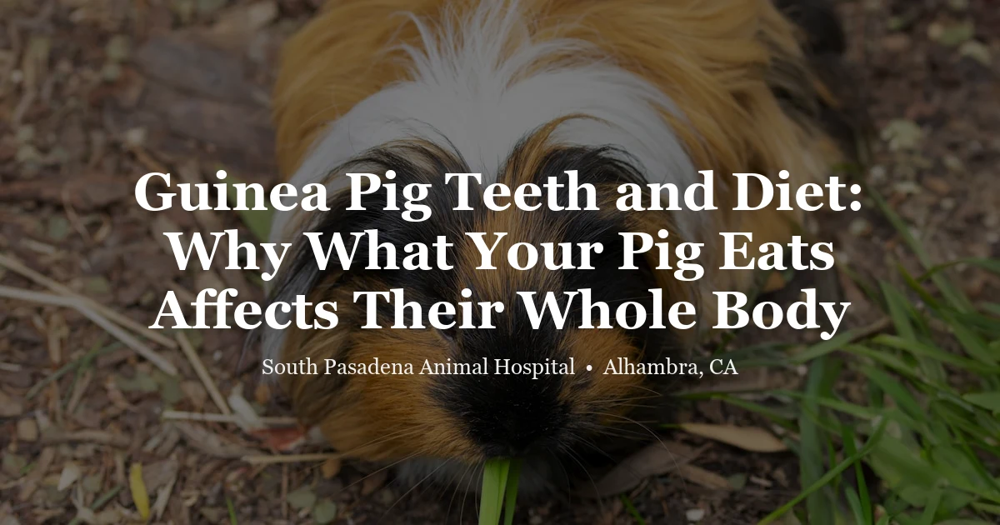

April 20, 2026 · 7 min read
Guinea Pig Teeth and Diet: Why What Your Pig Eats Affects Their Whole Body

Here's something we tell almost every guinea pig owner who comes through our clinic: dental disease is almost always a diet problem. Not sometimes. Almost always. And the owners who find this out are usually the ones whose pig started refusing hay a few months ago and nobody made the connection.
Dental disease is one of the most common things that brings guinea pigs into our exotic exam room. By the time we see them, the problem has usually been building quietly for months. This post breaks down what's actually happening in that tiny mouth, and what diet has to do with it.
Guinea Pig Tooth Anatomy: The Basics
Guinea pigs have 20 teeth that never stop growing. All 20 — the 4 incisors you can see at the front, plus 4 premolars and 12 molars deep in the cheek. Those back teeth are the real problem area. You cannot see them without proper equipment and sedation. They're buried in a narrow oral cavity, and an awake guinea pig will not tolerate the positioning needed to assess them properly. What this means practically: owners often have no idea there's a dental problem until the guinea pig stops eating. And that usually means the problem has been there for a while.
The whole dental system depends on constant, correct wear from appropriate food — specifically the lateral grinding motion that comes from chewing long-strand hay. When that motion isn't happening enough, teeth overgrow, develop sharp points and spurs, and start cutting into the tongue and cheek tissue.
What guinea pigs actually need to eat
Unlimited grass hay — timothy, orchard, or meadow — is the cornerstone. This is non-negotiable. Long-strand hay drives the lateral chewing motion that keeps the back teeth worn correctly; it should make up 70–80% of the total diet. Fresh leafy greens daily (romaine, red leaf lettuce, cilantro, parsley, bell pepper) supplement the hay. A small daily amount of guinea pig pellets — not rabbit pellets, which lack vitamin C — rounds it out. Pellets supplement hay; they don’t replace it. And vitamin C: guinea pigs can’t synthesize their own, just like humans. Half a small bell pepper daily is one of the most reliable sources. Avoid iceberg lettuce (essentially empty water), excess high-calcium greens, fruit, seeds, and anything high in sugar.
How Diet Leads to Dental Disease
A guinea pig living on pellets and watery vegetables doesn't chew the way a guinea pig needs to chew. Pellets are soft — they go down fast with minimal lateral grinding. The same goes for wet leafy greens. Long-strand hay is what drives the side-to-side chewing motion that keeps the back teeth worn down to a normal surface. Without enough of it, the cheek teeth keep growing, develop sharp edges, and eventually start gouging the soft tissue on either side.
In severe cases — and we do see these — the tongue gets trapped between the overgrown tooth arcades. The pig can't move it to swallow. At that point, eating is almost impossible, and the situation is an emergency.
What makes this especially dangerous is the speed of deterioration once a pig stops eating. Guinea pigs have almost no metabolic reserve. A guinea pig in GI stasis can go downhill in 24–48 hours. The cycle is brutal: dental pain → less eating → less chewing → more overgrowth → more pain. And it usually starts quietly, with a pig that "just started preferring pellets" a few weeks ago.
Signs of dental problems
Selective eating is usually the first sign — a pig that used to eat hay freely and now avoids it is telling you something. Drooling or a persistently wet chin means swallowing is uncomfortable. Weigh your guinea pig weekly on a kitchen scale; small ongoing losses of a few grams per week add up fast in an animal weighing 900–1,200 grams. Dropping food while chewing (quidding) shows up as small chewed wads of hay on the cage floor near where the pig eats. Reduced fecal output follows reduced eating. Eye discharge on one side is worth paying attention to — cheek tooth roots sit close to the eye socket, and root elongation or infection can cause tearing on the same side. A firm or soft swelling along the jaw line means prompt evaluation. Teeth chattering while eating suggests abnormal tooth contact.
Diagnosis and Treatment
You cannot examine the cheek teeth in an awake guinea pig. Full stop. The oral cavity is too narrow, the cheek pouches are soft tissue that shifts, and the animal won't hold still for it. Sedation or anesthesia is required — every time. We also take dental X-rays, because the physical exam alone doesn't show you what's happening at the tooth roots. Root elongation, bone involvement, and abscess formation are all things that look fine visually but show up clearly on radiographs. Skipping the X-rays means guessing.
Treatment is burring the sharp points and overgrown surfaces down to a normal occlusal surface under anesthesia. In early dental disease, most guinea pigs do quite well with regular dental procedures — usually every 3–6 months — alongside a real diet correction. More hay, fewer pellets. The procedures aren't cures; they're maintenance. The diet change is what slows the progression. Advanced disease with root elongation, bone involvement, or abscess formation is harder to manage and carries a more guarded long-term prognosis. Our exotic exam page explains what a full workup looks like.
Scurvy: The Other Dietary Emergency
Vitamin C deficiency (scurvy) is the second major diet-related condition in guinea pigs, and it can develop surprisingly quickly — within weeks on a poor diet. Signs include poor coat quality, reluctance to move due to joint pain, swollen feet, and poor wound healing. Scurvy can also worsen dental disease by affecting the integrity of the periodontal ligament.
Fresh bell pepper (half a small pepper daily) provides adequate vitamin C and is highly palatable to most guinea pigs. Vitamin C added to drinking water is not a reliable supplementation method — the vitamin degrades rapidly in water, especially when exposed to light, and the actual amount ingested is unpredictable. Fresh food is always the better approach.
Frequently Asked Questions
How do I know if my guinea pig's teeth are okay?
The incisors at the front should be short, straight, and yellowish-orange — that pigmentation is normal, not a problem. Long, white, or misaligned front teeth can signal something's off. But here's the thing: most dental disease starts in the back teeth, not the front. And those you literally cannot see at home. The cheek teeth require sedation and a veterinary exam to assess. If you're seeing any eating changes, weight loss, or selective food preference — that's your real signal to come in.
My guinea pig is eating but seems to prefer pellets. Should I be concerned?
Yes — this is often the first sign of cheek tooth discomfort. A pig that avoids hay but continues to eat soft foods is telling you that chewing is uncomfortable. Pellets are soft and require much less lateral grinding to consume. Preference for pellets over hay is worth a veterinary exam, even if the pig still appears to have a normal appetite overall.
Can I give my guinea pig vitamin C drops in the water?
Not reliably. Vitamin C (ascorbic acid) degrades in water within hours, particularly when exposed to light or if the water sits in a bowl rather than a bottle. The actual amount your guinea pig ingests is largely unknown. Fresh food — particularly bell pepper — is a much more dependable source and has the added benefit of providing enrichment and fiber.
How often should guinea pigs see a vet?
Annually at minimum. Guinea pigs over 3–4 years old benefit from twice-yearly exams, as dental and systemic disease (such as ovarian cysts in intact females and kidney disease) tends to progress more quickly in older animals. Because guinea pigs mask illness well, routine exams often catch problems before they become emergencies.
Do you see guinea pigs at SPAH?
Yes — we see guinea pigs and other exotic small mammals. We are currently accepting new exotic patients. You can book a wellness or sick exam online or call us at (626) 441-1314.
The Bottom Line
We see the same story over and over: a guinea pig that stopped eating hay months ago, a diet that drifted toward mostly pellets, and cheek teeth that have been quietly ovegrowing the whole time. By the time the owner notices a problem, it's already significant.
The fix is genuinely straightforward: unlimited grass hay, daily fresh greens with a reliable vitamin C source (bell pepper is the easiest), and pellets as a minor supplement — not the main event. Keep that in place and most guinea pigs never develop serious dental disease.
If you're seeing any of the signs above, or it's just been a while since your pig had a checkup, book an exotic exam or reach out through our contact page. Dental problems at the early stage are manageable. Caught late, they're a much heavier lift.